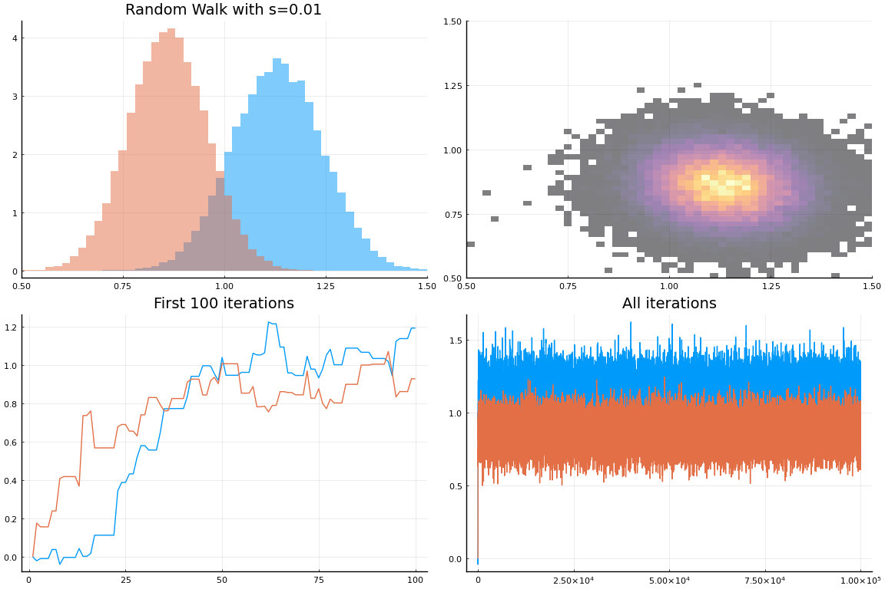
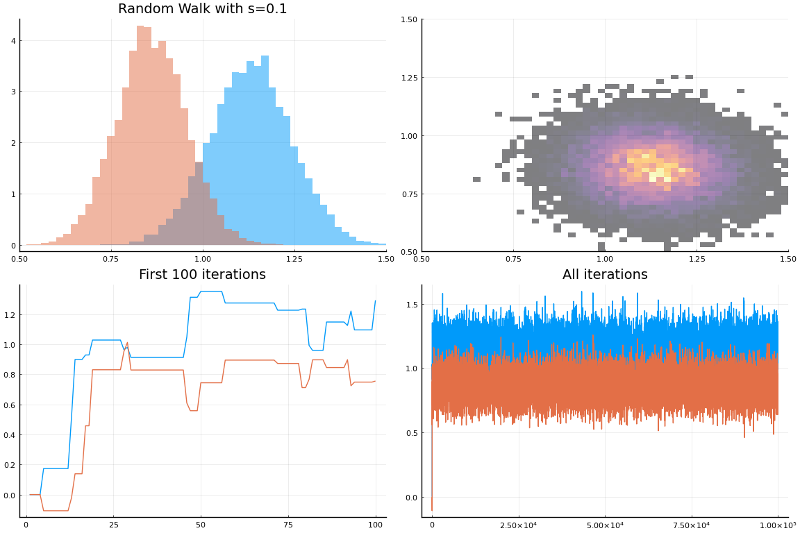
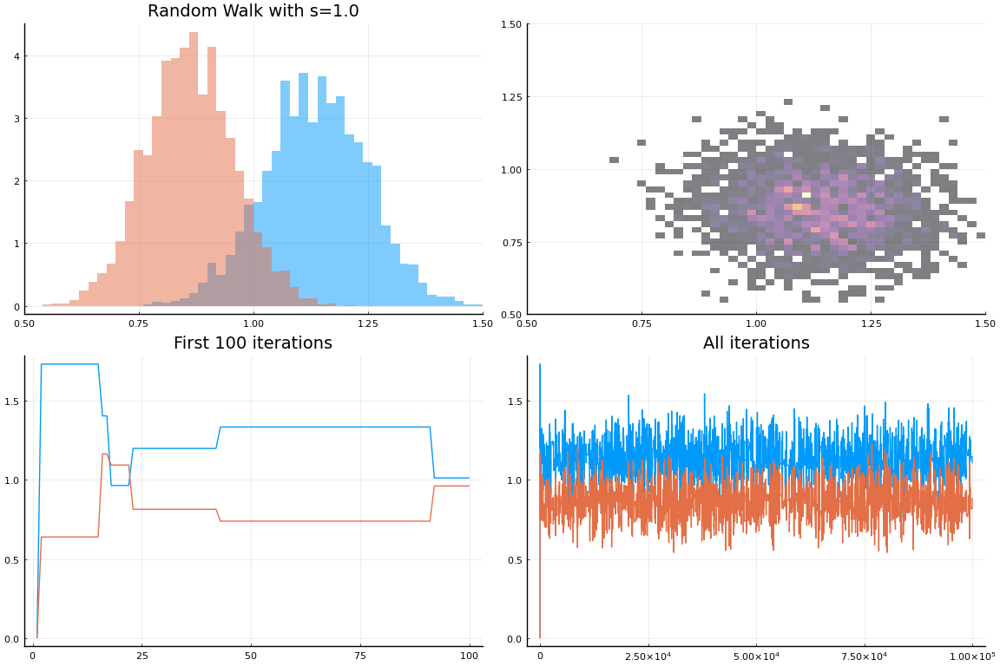
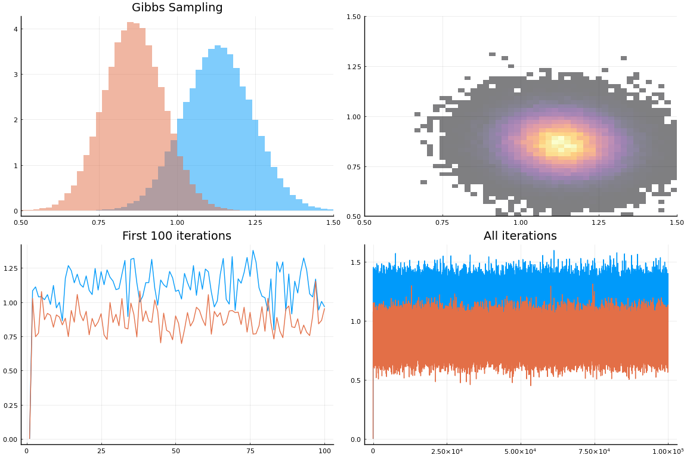
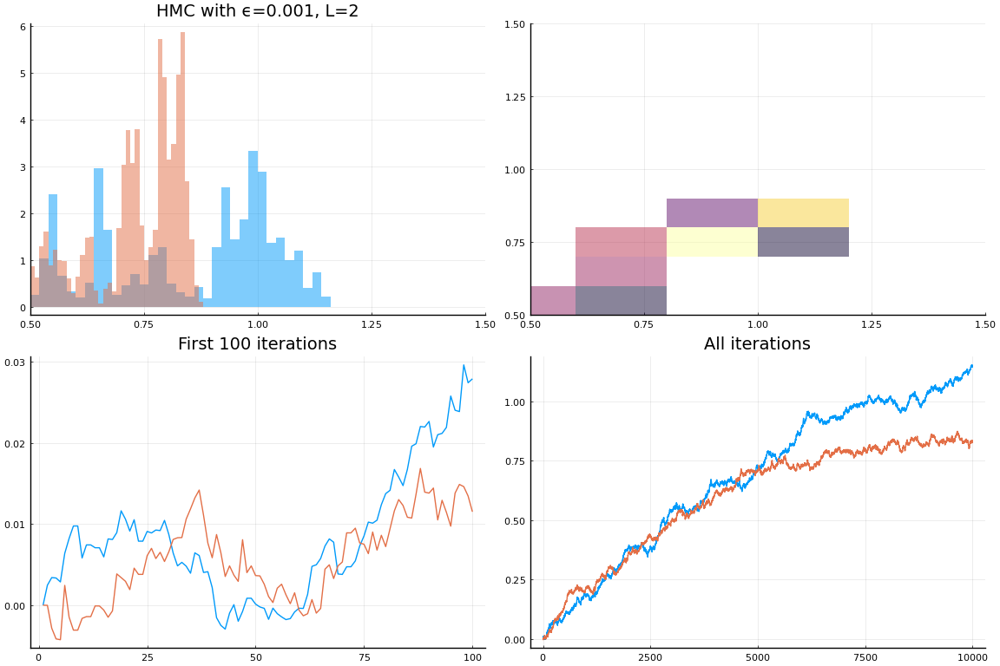
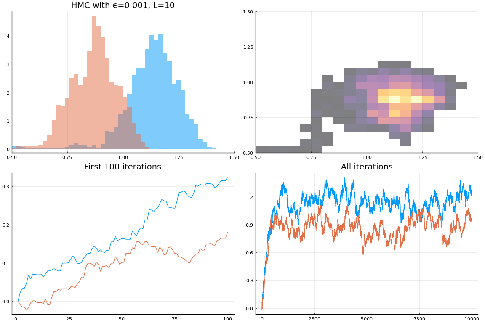
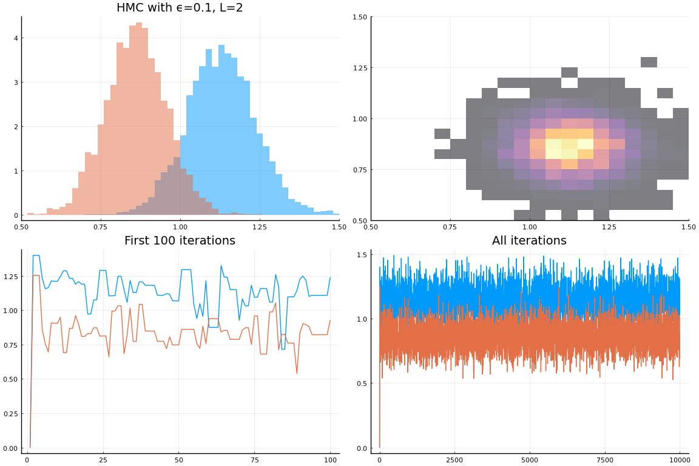

This work is licensed under a Creative Commons Attribution-ShareAlike 4.0 International License
using Plots, Distributions, StatsPlots, LinearAlgebra
Plots.pyplot()
Plots.PyPlotBackend()
Linear Regression¶
Let’s simulate a simple linear regression, and then sample from the posterior using a few methods.
The model is with $\epsilon_i \sim N(0, \sigma^2)$
Simulation¶
function simulateOLS(;N::Integer = Int(1e4), β = ones(4), σ = 1)
x = randn(N,length(β))
y = x*β + randn(N)*σ
return(x, y)
end
x, y = simulateOLS(N=Int(1e2), β=ones(2), σ=1)
([0.24028672132092774 0.1610425415770581; 0.8063626454312611 -1.09488538598
77512; … ; -0.723156846407223 0.028510765138135233; -2.2069599708500887 1.2
90874681127001], [0.9241041896457489, -0.7448390909274403, 1.63168824478042
97, -1.3561846102324333, -1.2338603318120267, -1.7819278865795871, -0.83995
89022316865, 1.127621561108231, -0.41848210142260334, -1.239660418302705 …
-0.16992286107408822, 0.8346837701491645, -0.11998103892739115, 1.8443011
72361067, -1.7372207959226003, 5.183723095097619, -1.000290388265417, -1.25
1402129826904, -1.496911050525861, -2.6735755810429866])
Computing Posteriors¶
To calculate the posterior distribution of $\beta$ given the $x$ and $y$, we use a conditional version of Bayes’ rule.
To keep the calculations as simple as possible, we will treat $\sigma$ as known for now. Since a regression model is agnostic about the distribution of $x$, it is standard to assume that In other words, the distribution of $\beta$ is independent of $x$.
With normal errors, the log likelihood, i.e. the log conditional density of $y$ given the parameters , or,
is:
function loglike(β, σ, x, y)
return(-length(y)/2*log(2π) - 1/2*sum(((y .- x*β)./σ).^2))
end
loglike (generic function with 1 method)
Exact Posterior¶
If we assume that the prior for $\beta$ is normal, then the posterior can be computed exactly. It is:
function posterior(β, σ, x, y, τ)
Σ = inv(x'*x/σ^2 + I/τ^2)
μ = Σ*x'*y/σ^2
return(pdf(MvNormal(μ, Σ), β))
end
posterior (generic function with 1 method)
Metropolis Hastings¶
If we didn’t know the exact posterior, we could sample from it in a number of ways. Metropolis Hastings is a simple general purpose method.
function mhstep(θ, likelihood::Function, prior::Function,
proposal::Function)
pold = likelihood(θ)*prior(θ)
θnew = rand(proposal(θ))
pnew = likelihood(θnew)*prior(θnew)
α = pnew*pdf(proposal(θnew), θ)/(pold *pdf(proposal(θ), θnew))
u = rand()
return( (u < α) ? θnew : θ)
end
function mhchain(θ0, iterations, likelihood, prior, proposal)
θ = similar(θ0, length(θ0), iterations)
θ[:,1] .= θ0
for i in 2:iterations
θ[:,i] .= mhstep(θ[:,i-1], likelihood, prior, proposal)
end
return(θ)
end
mhchain (generic function with 1 method)
When using Metropolis-Hastings, the proposal density plays a key role. The close the proposal is to the posterior, the faster the chain converges.
One common choice of proposal distribution is the random walk— draw candidate parameters from $N(\theta, s)$. Let’s try it.
τ = 10.0
k = size(x,2)
σ = 1.0
for s in [0.01, 0.1, 1.0, 10.0]
rwβ = mhchain(zeros(k), Int(1e5),
β->exp(loglike(β, σ, x, y)),
β->pdf(MvNormal(zeros(k), I*τ), β),
β->MvNormal(β, s*I))
lims=(0.5, 1.5)
h=histogram(rwβ', bins=100, labels=["β₁" "β₂"], fillalpha=0.5, linealpha=0, normalize=:pdf, xlim=lims, legend=false)
h2=histogram2d(rwβ[1,:], rwβ[2,:], xlim=lims, ylim=lims, normalize=:pdf, alpha=0.5, legend=false)
h2=contour!(h2, range(lims..., length=100), range(lims..., length=100), (b1,b2)->posterior([b1,b2],σ, x, y, τ))
display(plot(plot!(h,title="Random Walk with s=$s"), h2,
plot(rwβ[:,1:100]', labels=["β₁" "β₂"], title="First 100 iterations", legend=false),
plot(rwβ', labels=["β₁" "β₂"], title="All iterations", legend=false),
layout=(2,2)))
end
  
Another possible choice of proposal density is an independent — draw candidate parameters from some fixed distribution.
Gibbs Sampling¶
Gibbs sampling refers to when we sample part of our parameters conditional on others, then vice versa, and repeat. Generally, the more parameters than can be sampled at once, the better the chain will work. As a simple illustration, we can sample each of our regression coefficients conditional on the others.
function gibbschain(θ0, iterations, x, y, σ, τ)
θ = similar(θ0, length(θ0), iterations)
θ[:,1] .= θ0
for i in 2:iterations
β = θ[:,i-1]
@views for j in 1:length(β)
e = y .- x[:,1:end .!= j]*β[1:end .!= j]
v = 1/(dot(x[:,j], x[:,j])/σ^2 + 1/τ^2)
m = v * (dot(x[:,j],e)/σ^2)
β[j] = rand(Normal(m,sqrt(v)))
end
θ[:,i] = β
end
return(θ)
end
gβ = gibbschain(zeros(2), Int(1e5), x, y, σ, τ)
lims=(0.5, 1.5)
h=histogram(gβ', bins=100, labels=["β₁" "β₂"], fillalpha=0.5, linealpha=0, normalize=:pdf, xlim=lims, legend=false)
h2=histogram2d(gβ[1,:], gβ[2,:], xlim=lims, ylim=lims, normalize=:pdf, alpha=0.5, legend=false)
h2=contour!(h2, range(lims..., length=100), range(lims..., length=100), (b1,b2)->posterior([b1,b2],σ, x, y, τ))
display(plot(plot!(h,title="Gibbs Sampling"), h2,
plot(gβ[:,1:100]', labels=["β₁" "β₂"], title="First 100 iterations", legend=false),
plot(gβ', labels=["β₁" "β₂"], title="All iterations", legend=false),
layout=(2,2)))

Gibbs sampling is a particularly good idea when the parameters can be divided into groups such that posterior of parameters in each group conditional on the others has a known form. If some parameters do not have known posterior, then another sampling strategy within the Gibbs sampler can be used (like metropolis-hastings).
With judicious choice of blocks and conjugate priors, Gibbs sampling can be applied to very complex models. OpenBUGS, WinBUGS and JAGS are (non-Julia) software packages designed around Gibbs sampling. Mamba.jl is a Julia package that could be used for Gibbs sampling (as well as other sampling methods).
Hamiltonian Monte Carlo¶
Recent efforts in Bayesian computation have shifted away from Gibbs sampling of blocks with closed form posteriors towards more general purpose methods. Metropolis-Hastings is a general purpose algorithm in that all you need to use it is to be able to compute the likelihood (up to a constant of proportionality) and the prior. Unfortunately, Metropolis-Hastings requires a good proposal distribution to work well, and it is hard to find a good proposal distribution in many situations.
Hamiltonian Monte Carlo uses information about the gradient of the posterior to generate a good proposal distribution. The physical analogy here is that the log posterior acts like a gravitational field, and we generate samples by creating random trajectories through that field. With the right choice of trajectories (i.e. not too fast & not too slow), they will tend to concentrate in areas of high posterior probability, while also exploring the space of parameters well.
using Zygote, ForwardDiff
function hmcstep(θ, logdens, ϵ=0.1, L=5;
∇logdens=θ->Zygote.gradient(logdens, θ)[1],
M = I, iM=inv(M))
U(x) = -logdens(x)
dU(x) = -∇logdens(x)
K(m) = (m'*iM*m/2)[1]
dK(m) = m'*iM
m = rand(MvNormal(zeros(length(θ)), M),1)
θnew = copy(θ)
mnew = copy(m)
for s in 1:L
mnew .+= -dU(θnew)[:]*ϵ/2
θnew .+= dK(mnew)[:]*ϵ
end
α = exp(-U(θnew)+U(θ)-K(mnew)+K(m))
u = rand()
return(u < α ? θnew : θ)
end
function hmcchain(θ0, iterations, logdens, ∇logdens=θ->Zygotes.gradient(logdens, θ)[1]
; ϵ=0.1, L=5, M=I)
θ = similar(θ0, length(θ0), iterations)
θ[:,1] .= θ0
for i in 2:iterations
θ[:,i] .= hmcstep(θ[:,i-1], logdens, ϵ, L, M=M)
end
return(θ)
end
logp = β->(loglike(β, σ, x, y) + logpdf(MvNormal(zeros(k), I*τ), β))
∇logp(β) = ForwardDiff.gradient(logp, β)
for ϵ in [1e-3, 0.1]
for L in [2, 10]
@show ϵ, L
@time hβ = hmcchain(zeros(k), Int(1e4),logp, ϵ=ϵ, L=L)
lims=(0.5, 1.5)
h=histogram(hβ', bins=100, labels=["β₁" "β₂"], fillalpha=0.5, linealpha=0,
normalize=:pdf, xlim=lims, legend=false)
h2=histogram2d(hβ[1,:], hβ[2,:], xlim=lims, ylim=lims, normalize=:pdf, alpha=0.5, legend=false)
h2=contour!(h2, range(lims..., length=100), range(lims..., length=100), (b1,b2)->posterior([b1,b2],σ, x, y, τ))
display(plot(plot!(h,title="HMC with ϵ=$ϵ, L=$L"), h2,
plot(hβ[:,1:100]', labels=["β₁" "β₂"], title="First 100 iterations", legend=false),
plot(hβ', labels=["β₁" "β₂"], title="All iterations", legend=false),
layout=(2,2)))
end
end
(ϵ, L) = (0.001, 2)
1.942575 seconds (16.88 M allocations: 832.437 MiB, 9.73% gc time)
(ϵ, L) = (0.001, 10)
7.078797 seconds (78.05 M allocations: 3.641 GiB, 9.95% gc time)
(ϵ, L) = (0.1, 2)
1.491165 seconds (15.98 M allocations: 788.496 MiB, 9.56% gc time)
(ϵ, L) = (0.1, 10)
7.070048 seconds (78.05 M allocations: 3.641 GiB, 9.94% gc time)
  
The step size, $\epsilon$, and the number of steps, $L$, affect how well the chain performs. If $\epsilon$ or $L$ is too large, then many proposals will get rejected. If $\epsilon L$ is too small, then the draws will be very close together, and it will take more iterations of the chain to explore the space.
The No-U-Turn-Sample (NUTS) ((Hoffman and Gelman 2014)) automatically chooses $L$ and $\epsilon$. DynamicHMC.jl is a Julia implementation. Stan is (non-Julia, but callable from Julia) software for Bayesian modelling that largely uses NUTS for sampling. Turing.jl is a probabilistic programming language (similar to STAN or BUGS), built on top of Julia.
About¶
This meant to accompany these slides on Bayesian methods in IO.
This document was created using Weave.jl ((Pastell 2017)). The code is available in on github.
Hoffman, Matthew D, and Andrew Gelman. 2014. “The No-U-Turn Sampler: Adaptively Setting Path Lengths in Hamiltonian Monte Carlo.” Journal of Machine Learning Research 15 (1): 1593–1623. http://www.jmlr.org/papers/volume15/hoffman14a/hoffman14a.pdf.
Pastell, Matti. 2017. “Weave.jl: Scientific Reports Using Julia.” The Journal of Open Source Software. https://doi.org/http://dx.doi.org/10.21105/joss.00204.